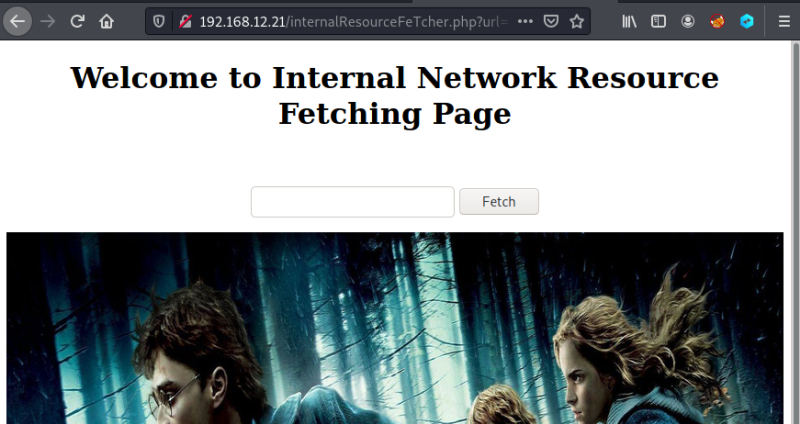

3.1.4 SSRF (Server Side Request Forgery)
Server-side request forgery (also known as SSRF) is a web security vulnerability that allows an attacker to induce the server-side application to make HTTP requests to an arbitrary domain of the attacker's choosing. (From here)
SSRF attacks against the server itself
In an SSRF attack against the server itself, the attacker induces the application to make an HTTP request back to the server that is hosting the application, via its loopback network interface. This will typically involve supplying a URL with a hostname like
127.0.0.1 (a reserved IP address that points to the loopback adapter) or localhost (a commonly used name for the same adapter).1. Go to the following URL on your Kali Machine.
http://192.168.12.21/internalResourceFeTcher.php?url=127.0.0.1

It loads you up to the main page.